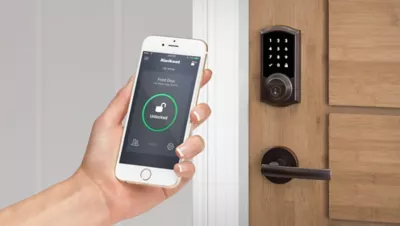

There are so many different types of locks in the world!
Yes there are many different types of locks. This page will go through some common locks.
Let's start off with padlocks.
Padlocks
Padlocks are a portable lock and utilise the pin tumbler lcok design.
They can either be keyed or have a combination to unlock them.
There are two different types of keyed padlocks: key retaining and non-key retaining.
A key retaining padlock cannot have its key removed from the padlock while it is unlocked.
A non-key retaining padlock can have its key removed from the padlock when it is unlocked. It can also be re-keyable.

Door Knobs
Door knob locks are found in residential homes and utilise the pin tumbler design as well.
The lock cylinder is contained in the knob which doesn't make it the safest lock. It shouldn't be used in external doors and an intruder can break the knob off to break in.
Deadbolts
Deadbolts are commonly used on external doors and are quite effective against brute force attacks.
They consist of a bolt, a thumb latch, a turn piece and keyhole.
When a key is used to engage the lock, the rotating cylinder drives the bolt into the door frame. The bolt cannot be retracted until the key is used to rotate the cylinder again.
There are 3 variations of deadbolt locks: single cylinder, double cylinder and lockable thumb turn.
The single cylinder has a key cylinder on one side and a rotating thumb turn on the other side.
The double cylinder has key cylinders on both sides.
The lockable thumb turn has a key cylinder on one side and thumb turn with a lockable key cylinder.
Lever Handle Locks
Lever handle locks are used in commercial doors and consists of a lever that is moved up or down to release the bolt.
These locks are easy to open, however, they are susceptible to lockpicking and brute force attacks, making them easily penetrable.
As a result, 'clutch' levers can be used to reduce the effectiveness of brute force attacks as the lever cannot be turned without puting pressure on the lock.

Cam Locks
Cam locks are used in places such as cabinets and vending machines.
They consists of a small metal flat tailpiece, known as the 'cam', which rotates in and out of the door when a key is used.
These locks, however, are easily picked which make them easy to overcome.
Mortise Locks
Mortise locks are used in commercial and apartment doors and are found on the inside of the door.
These locks are a combination of two locks: the non-locking sprung latch and a deadbolt for added security.
It is quite strong against brute force attack but it can still be opened using lockpicking.
Euro Profile Cylinders
Euro profile cylinders are used in Europe, Asia and North America and are found in sliding doors.
There are 2 varieties of these locks: the single cylinder and the double cylinder.
Single cylinders have a key or a turning thumb on one side of the lock which is used to engage it and it can only locked or unlocked from the inside.
Double cylinders require a key and hace a variation of turn thumb on one side and lock cylinder on the other side. They can be locked and unlocked from any side but is susceptible to 'lock snapping' under brute force and lockpicking.
Jimmy Proof Deadbolts
These locks are mounted on the inside of the door and are used in sliding glass doors and room dividers
They consists of vertical locks that are interlocked and fall onto a strike plate upon engaging the lock and cannot be easily pulled apart or pryed with a crowbar.
Jimmy proof deadbolts have a single cylinder with a key entry point on one side and a knob on the other side. They also have a secondary lock in the form of a toggle that locks the debolt such that even a key can't open the lock.
Interchangable Core Cylinders
Interchangable core cylinders are used in larger businesses and institutions and can be easily re-keyed without deconstructing the lock by taking the core out.
These locks have 2 keys: the operator key and the control key.
The operator key is used to open the lock normally whilst the control key is used to take the core out.
They can only be installed in a place specifically modified for these locks.
There are two different types of interchangable core cylinders: small formate interchangable lock and large format interchangable lock.
The small format interchangable lock is in a figure eight shape whilst the large format interchangable lock has varying sizes.
Furniture Locks
Furniture locks are used in places such as cabinets, desks and sliding doors.
These locks have two types: bolt and push button
The bolt is a flat metal piece that extends out sideways from the lock.
The push button consists of a rod that extends out the back of the lock which retracts back into the lock body once the lock is unlocked.

Rim Latch Locks and Rim Cylinder Locks
Rim cylinder locks are similar to mortise locks and consist of a long metal piece that passes through the door from the rear of the lock. These locks are held by two internal screws that connect to back of the rim cylinder.
Rim latch locks utilise a rim cylinder and a mount latch lock. They are weak against brute force attacks but automatically locks when a door is closed. These locks can only be locked from one side.


Smart Locks
Most smart locks are based on electrical systems and technology.
They can be unlocked using a phone, bluetooth, wifi or even a fingerprint.
They can have a keypad and an additional keyhole as well.
